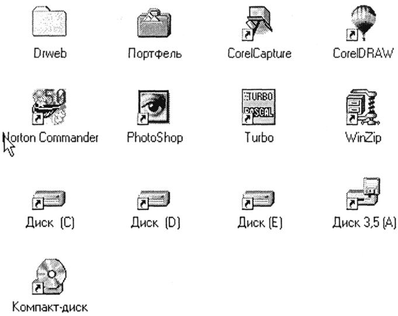

Основные темы
Дружественный пользовательский интерфейс
Разработчики современного програмного обеспечения стараются сделать работу удобной, простой, наглядной. Потребительские качества любой программы во многом определяются удобством ее взаимодействия с пользователем.Форму взаимодействия программы с пользователем называют пользовательским интерфейсом. Удобная для пользователя форма взаимодействия называется дружественным пользовательским интерфейсом.
Объектно-ориентированный интерфейсИнтерфейс современных системных и прикладных программ носит название объектно-ориентированного интерфейса. Примером операционной системы, в которой реализован объектно-ориентированный подход, является Windows.
Операционная система работает с множеством объектов, к числу которых относятся: документы, программы, дисководы, принтеры и другие объекты, с которыми мы имеем дело, работая в операционной системе.
Документы содержат некоторую информацию: текст, звук, картинки и т. д. Программы используются для обработки документов. Отдельные программы и документы неразрывно связаны между собой: текстовый редактор работает с текстовыми документами, графический редактор - с фотографиями и иллюстрациями, программа обработки звука позволяет записывать, исправлять и прослушивать звуковые файлы.
Документы и программы - это информационные объекты. А такие объекты, как дисководы и принтеры, являются аппаратными (физическими) объектами.
С объектом операционная система связывает:
В интерфейсе операционной системы для обозначения документов, программ, устройств используются значки (их еще называют пиктограммами, иконками) и имена. Имя и значок дают возможность легко отличить один объект от другого.

С каждым объектом связан определенный набор свойств и множество действий, которые могут быть выполнены над объектом.
Например, свойствами документа являются его местоположение в файловой структуре и размер. Действия над документом: открыть (просмотреть или прослушать), переименовать, напечатать, скопировать, сохранить, удалить и др. Контекстное меню
Операционная система обеспечивает одинаковый пользовательский интерфейс при работе с разными объектами. В операционной системе Windows для знакомства со свойствами объекта и возможными над ним действиями используется контекстное меню (рис. 2.12) (для вызова контекстного меню следует выделить значок объекта и щелкнуть правой кнопкой мыши).
Меню - это выводимый на экран список, из которого пользователь может выбирать нужный ему элемент.
В меню на рисунке все пункты, кроме последнего, относятся к действиям, которые можно выполнить с документом. Выбор нужного пункта меню производится с помощью клавиш управления курсором или манипулятора (например, мыши). Если выбрать пункт меню "Свойства", то на экран будет выведен список свойств данного объекта.
Вопросы и задания
1. Что такое пользовательский интерфейс?
2. Чем характеризуется объект (с точки зрения объектно-ориентированного подхода)?
3. Каким образом можно узнать свойства объекта или выполнить действие над ним?
Выполните задания теста:
(вводите в окно ввода цифру правильного ответа)1. Пользовательский интерфейс - это
1)Интерфейс, который выбрал пользователь при установке операционной системы
2)Способ взаимодействия программы с пользователем
3)Программа для ознакомления с компьютером
2. С объектом операционная система связывает
1)Имя, графическое обозначение, свойства, действия(поведение)
2)Только имя
3)Свойства и действия(поведение)
3. Выводимый на экран список, из которого пользователь может выбирать нужный ему элемент - это
1)Пользовательский интерфейс
2)Система для программирования
3)Меню
Все права защищены Яковлевым Т. и Каримовым С. ООО "The worst company in the world"